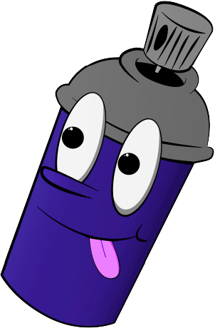

ABOUT
Over Ons
Als street-art liefhebber zocht ik naar manieren in Amsterdam hoe street-art, omdat je dit eigenlijk altijd wel ziet als je een rondje loopt door Amsterdam, je aan het denken kan laten zetten over het welzijn van de natuur.
Doel
Mijn doel is niet alleen om mensen meer aan het denken te zetten over de natuur, maar ook over street art. Vaak zien mensen street art en denken ze niet vaak dat het een betekenis heeft, wanneer er vaak erg veel over na is gedacht, en het over huidige problemen in de wereld kan gaan.
Impact
De impact van street art ga je niet direct zien op de natuur, maar het zet mij en anderen wel aan het denken over de natuur en duurzaamheid, wat wel direct impact kan hebben. Sommigen eten bijvoorbeeld een stukje minder vlees en andere kleine dingetjes die toch wat meedragen.